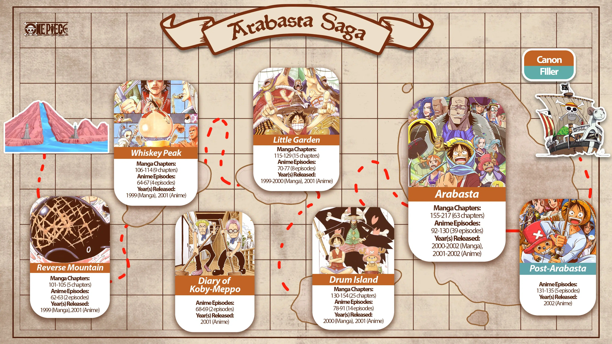

A saga East Blue segue as aventuras iniciais de Luffy e sua tripulação enquanto eles exploram o Mar East Blue, enfrentam diversos desafios e reúnem novos membros para sua equipe. Destaques incluem a luta contra Arlong na ilha Cocoyasi.
A saga Alabasta leva os Piratas do Chapéu de Palha à ilha de Alabasta, onde enfrentam o vilão Crocodile e sua organização Baroque Works em uma luta para salvar o reino da destruição e da guerra civil.
A saga Skypiea leva a tripulação de Luffy para a ilha flutuante de Skypiea, onde enfrentam desafios únicos e lutam contra o autoproclamado Deus Enel em busca do lendário tesouro da cidade dourada.
A saga Water 7 apresenta os Piratas do Chapéu de Palha na cidade de Water 7, onde enfrentam desafios como a perda de seu navio, o Going Merry, e uma batalha épica contra a CP9 para salvar Nico Robin.